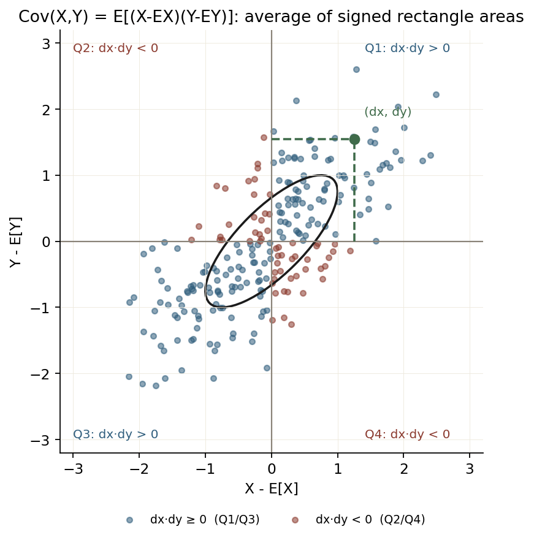
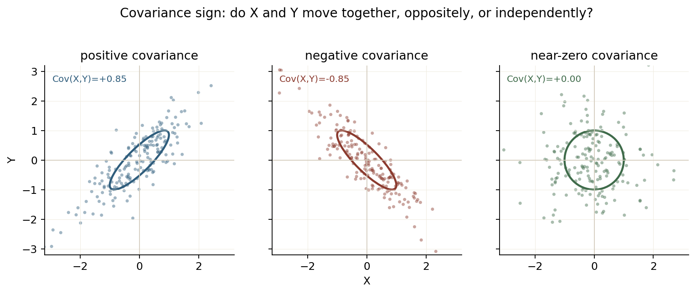
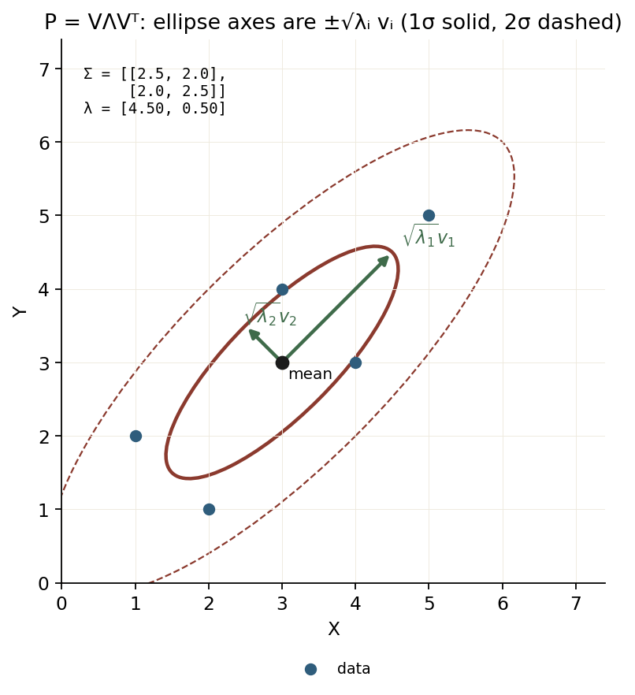
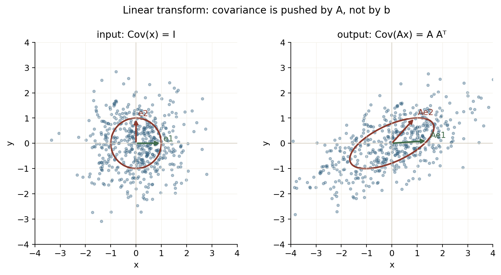

Lesson 0001 · 补充
协方差：从“一起变”到 P = E[(x−μ)(x−μ)ᵀ]
这一页只做一件事：把“协方差”从定义、到矩阵、到椭圆、到 KF 里的 P/Q/R 讲清楚。只需要高中概率：期望、方差、加权平均。
P 是椭圆”“为什么 y=Ax+b 后 P 变成 A P Aᵀ”。
1. 只用三件高中学过的事
随机变量 X：取值不确定，但每个值有概率。比如掷骰子，X 可以取 1 到 6。
期望 E[X]：按概率加权的平均。
E[X] = Σ_i x_i · Pr(X = x_i) 例：均匀骰子 E[X] = (1+2+3+4+5+6)/6 = 3.5
期望是线性的，这一条后面一直用：
E[aX + b] = a E[X] + b E[X + Y] = E[X] + E[Y]
方差 Var(X)：偏离均值有多远，用“平方的平均”来量。
Var(X) = E[(X − E[X])²] = E[X²] − (E[X])² σ_X = sqrt(Var(X)) # 标准差，和 X 同单位
① 列向量
(X, Y)ᵀ = [X; Y]，转置 ᵀ 就是把一行变一列；② 2×2 乘 2×1：
[a b; c d]·[x; y] = [ax+by; cx+dy]；③
E[·] 对矩阵/向量是“每个元素分别求期望”。不需要会解线性方程组，也不需要会证明特征值。
2. 协方差的定义：两个“偏差”的乘积的平均
Cov(X, Y) = E[(X − E[X]) · (Y − E[Y])]也就是：X 的偏差乘以Y 的偏差，再按概率求平均。
把 dx = X − E[X]、dy = Y − E[Y] 看成“这次 X/Y 比平均高多少”。
dx和dy同号（同高或同低）→ 乘积为正；dx和dy异号（一个高一个低）→ 乘积为负；- 正负差不多抵消 → 协方差接近 0。

dx、dy 乘起来：一、三象限（蓝）贡献正，二、四象限（红）贡献负。协方差就是这些“带符号矩形面积”的平均。图由 assets/make_covariance_figures.py 生成。如果 X 和 Y 是离散的，写成加权和就是：
Cov(X,Y) = Σ_i Σ_j (x_i − μ_X)(y_j − μ_Y) · Pr(X=x_i, Y=y_j) μ_X = E[X], μ_Y = E[Y]
如果手上是 N 个等概率样本，就变成“平均”：
Cov(X,Y) ≈ (1/N) Σ_{k=1..N} (x_k − x̄)(y_k − ȳ)
Cov(X,X) = Var(X)：自己和自己“一起变”就是方差。②
Cov(X,Y) = Cov(Y,X)：乘法交换，协方差对称。③
Cov(aX+b, cY+d) = ac · Cov(X,Y)：平移 b,d 不影响；缩放 a,c 直接乘进去。
2.1 等价公式：E[XY] − E[X]E[Y]
把括号展开，再用期望的线性：
E[(X−μ_X)(Y−μ_Y)] = E[XY − Xμ_Y − μ_X Y + μ_X μ_Y] = E[XY] − μ_Y E[X] − μ_X E[Y] + μ_X μ_Y = E[XY] − μ_X μ_Y
所以：
Cov(X,Y) = E[XY] − E[X]·E[Y]
这个式子手算最快：先算“乘积的平均”，再减去“平均的乘积”。
X 是米、Y 是秒，协方差就是“米·秒”，数值大小会随单位变。相关系数把它归一化：
ρ = Cov(X,Y) / (σ_X σ_Y)，范围 [−1, 1]，只看“线性相关有多强”。ρ=1 完全同向，ρ=−1 完全反向，ρ=0 没有线性相关（不一定独立）。
3. 手算 5 个点：把定义走一遍
拿 5 个点（可以想成 5 帧里目标的 x/y 位置）：
(1,2), (2,1), (3,4), (4,3), (5,5)
先算均值：x̄ = 3，ȳ = 3。再算每个点的偏差和乘积：
| 点 | x | y | dx = x−3 | dy = y−3 | dx·dy |
|---|---|---|---|---|---|
| 1 | 1 | 2 | −2 | −1 | +2 |
| 2 | 2 | 1 | −1 | −2 | +2 |
| 3 | 3 | 4 | 0 | +1 | 0 |
| 4 | 4 | 3 | +1 | 0 | 0 |
| 5 | 5 | 5 | +2 | +2 | +4 |
| 和 | +8 |
样本协方差（分母 N−1 = 4）：
Cov(x,y) = 8 / 4 = 2.0 Var(x) = (4+1+0+1+4)/4 = 10/4 = 2.5 Var(y) = (1+4+1+0+4)/4 = 10/4 = 2.5 ρ = 2.0 / (sqrt(2.5)·sqrt(2.5)) = 2.0/2.5 = 0.8
所以这 5 个点的协方差矩阵是：
P = [[Var(x), Cov(x,y)],
[Cov(x,y), Var(y) ]]
= [[2.5, 2.0],
[2.0, 2.5]]
E[XY]−E[X]E[Y] 用的是“除以 N”的总体/样本矩：8/5 = 1.6。这里用的是“除以 N−1”的无偏样本协方差：
8/4 = 2.0。如果这 5 个点就是全部总体，用 1.6；如果它们是从更大总体里抽的样本，用 2.0 更合适。N 很大时两者几乎一样。
为什么是 N−1？ 因为你先用样本均值 x̄ 代替了真实均值，5 个偏差满足 Σdx=0，只要知道前 4 个，第 5 个就确定了——只剩 N−1 个“独立信息”。除以 N−1 得到的估计才是无偏的。高中阶段可以先记“样本协方差分母用 N−1”，不必深究证明。
4. 协方差矩阵：把一堆协方差装进一个矩阵
如果有两个变量 X,Y，把它们排成列向量：
x = [X; Y] μ = [E[X]; E[Y]] dx = x − μ = [X−E[X]; Y−E[Y]]
P = E[(x − μ)(x − μ)ᵀ]先做“列向量 × 行向量”的外积，得到一个 2×2 矩阵；再对每个元素求期望。
把外积写开，初中/高中矩阵乘法就够：
(x−μ)(x−μ)ᵀ = [dx; dy] · (dx, dy)
= [[dx·dx, dx·dy],
[dy·dx, dy·dy]]
P = E[ ... ] = [[E[dx²], E[dx·dy]],
[E[dy·dx], E[dy²] ]]
= [[Var(X), Cov(X,Y)],
[Cov(X,Y), Var(Y) ]]
所以：
- 对角线是各自的方差（自己和自己）；
- 非对角线是协方差（X 和 Y 一起变的程度）；
- 矩阵一定对称：
P[0,1] = P[1,0]。

assets/make_covariance_figures.py 生成。a=[a1; a2]，aᵀ P a 就是“把点投影到 a 方向后的方差”，方差不可能为负，所以
aᵀ P a ≥ 0。几何上：椭圆的轴长平方（特征值）都 ≥ 0，不会出现“虚轴”。这个性质在 KF 里保证 P 不会变成负方差。
5. 几何：为什么 P 是一个椭圆
二维高斯分布的点云，等高线是椭圆。协方差矩阵决定了椭圆的方向和胖瘦。对 P 做特征分解：
P = V · Λ · Vᵀ V = [v1 v2] # 两个互相垂直的方向（特征向量）：P·v_i = λ_i·v_i Λ = diag(λ1, λ2) # 对角矩阵；λ_i 是“该方向的方差”（特征值） 椭圆在 v1 方向的半轴长 = sqrt(λ1) 椭圆在 v2 方向的半轴长 = sqrt(λ2)
V 的列是单位向量，所以 Vᵀ 就是 V 的逆；这一步只是把坐标旋转到椭圆轴上。不需要会手算特征值，先记住几何意义：特征向量 = 椭圆轴的方向；特征值 = 轴长的平方。1σ 椭圆取 c=1，2σ 取 c=2。

P=[[2.5,2],[2,2.5]]，特征值 4.5 和 0.5，轴长 2.12 和 0.707。实线是 1σ，虚线是 2σ；箭头是特征向量。图由 assets/make_covariance_figures.py 生成。三个典型情况：
| 协方差 | 椭圆 | 直觉 |
|---|---|---|
Cov > 0 | 向右上倾斜 | X 大时 Y 也倾向大 |
Cov < 0 | 向右下倾斜 | X 大时 Y 倾向小 |
Cov ≈ 0 | 轴对齐（若方差相等则是圆） | 没有线性同向/反向 |
相关系数 ρ 越接近 ±1，椭圆越“扁”（点几乎在一条线上）；ρ≈0 时最“圆”。
6. 传播：y = Ax + b 后 P 变成 A P Aᵀ
这就是前面那条 Cov(aX+b, cY+d) = ac·Cov(X,Y) 的矩阵版：y 的每个分量都是 x 的线性组合，逐项套用该性质即可。
E[y] = A E[x] + b Cov(y) = A Cov(x) Aᵀ
b 只是平移，不影响协方差。KF 里的 P⁻ = F P Fᵀ + Q、S = H P Hᵀ + R 就是这一步再加噪声。

A 后变成斜椭圆；形状由 A Aᵀ 决定，b 只移动中心。图由 assets/make_covariance_figures.py 生成。7. 回到 KF：P、Q、R 分别是谁的协方差
| 符号 | 是谁的协方差 | 直觉 |
|---|---|---|
P | 估计误差 x − x̂ 的协方差 | “我现在有多不确定” |
Q | 过程噪声 w 的协方差 | “模型有多不靠谱” |
R | 观测噪声 v 的协方差 | “传感器有多不靠谱” |
一维 KF 的后验方差，可以完全用这一页的代数推出来：
K = P⁻ / (P⁻ + R) P⁺ = (1 − K) P⁻ = P⁻ − P⁻²/(P⁻+R) = P⁻R/(P⁻+R) 所以： 1/P⁺ = 1/P⁻ + 1/R
这就是“两个信息源的精度相加”：先验的精度 1/P⁻，观测的精度 1/R，融合后的精度是两者之和。协方差越大，精度越小，越不被信任。
多维版本长这样（这一页不要求推导，只要知道每个字母是协方差）：
S = H P⁻ Hᵀ + R # 观测空间的创新协方差 K = P⁻ Hᵀ S⁻¹ # 增益 P⁺ = (I − K H) P⁻ (I − K H)ᵀ + K R Kᵀ

verify/verify_kf.py 生成。再往前一步，马氏距离就是把“椭圆”拉成“圆”再量距离：
d_M² = (x − μ)ᵀ P⁻¹ (x − μ)
如果 P 很大（很不确定），同样的偏差算出来的 d_M 就小；如果 P 很小（很确定），一点偏差就很“异常”。NIS 就是用观测空间的 S 做同样的事。
8. 一页总结
定义：Cov(X,Y) = E[(X−EX)(Y−EY)]
矩阵：P = E[(x−μ)(x−μ)ᵀ]
= [[Var(X), Cov(X,Y)],
[Cov(X,Y), Var(Y)]]
椭圆：P = VΛVᵀ，轴长 = sqrt(λ)
传播：y = Ax+b → Cov(y) = A P Aᵀ
KF： P⁻ = F P Fᵀ + Q
S = H P Hᵀ + R
1/P⁺ = 1/P⁻ + 1/R （一维）
一句话：协方差不是“误差大小”，是“不确定性的形状”；P/Q/R 是三个不同来源的形状。
9. 三问自检
1. Cov(X, X) 等于什么？
2. 如果 Cov(X,Y) > 0，点云椭圆通常往哪倾斜？
3. y = Ax + b 中，b 对 Cov(y) 的影响是？